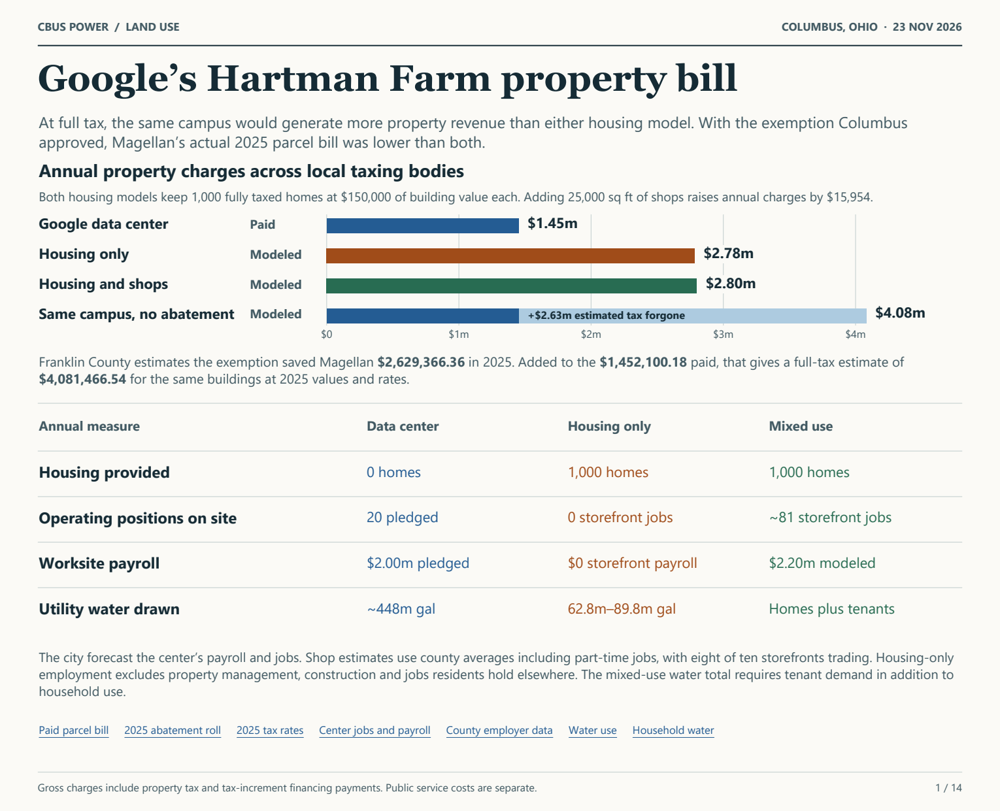

Land use ·
How Google got its tax break at Hartman Farm
Columbus council member Elizabeth Brown saw a projected $54 million tax break over 15 years and 20 promised permanent jobs in the Hartman Farm proposal. “What does the city get from this?” she asked an aide. Attorney Scott Ziance spoke for the developer, Magellan Enterprises, at Council’s public meeting. Five months after the vote, Forbes published Brown’s email and identified the company behind Magellan as Google.
Brown’s email and explanation in Forbes City’s projected tax savings and withholding, p. 3 Ohio’s Google and Magellan entry, p. 37
Under Ohio’s Community Reinvestment Area program, Magellan asked Columbus to exempt 100% of its qualifying new construction. The ordinance says its representatives described the incentive as “crucial” to going ahead. The city’s Department of Development recommended the full request. Staff expected at least $300 million in private investment and $50,000 a year in new city income-tax withholding from the permanent jobs.
Magellan’s request and the department’s recommendation, p. 1 Council’s incentive ordinance
The Far South Area Commission voted 7–4 against rezoning land planned for homes and shops. Its vote was advisory. An exemption above 50% required school board approval. Hamilton Local Schools made its consent conditional on a separate compensation agreement with a $600,000 annual base payment.
Area commission’s letter, p. 10 Rezoning decision School board’s approval, §2 School compensation terms, p. 4
On March 22, 2021, Emmanuel Remy moved approval and Brown seconded. Council voted 6–1. Shayla Favor cast the only no vote. Brown later told Forbes that hundreds of construction jobs at prevailing wages and the tax revenue she expected after the exemption expired had persuaded her.
Council’s motion and seven recorded votes Brown’s email and explanation in Forbes
Magellan paid $1,452,100.18 in 2026 on its 2025 parcel bill. Hamilton schools were allocated about $718,000 of that payment. Franklin County estimates the exemption saved Magellan $2,629,366.36 that year. Adding the savings back to the paid bill gives $4.08 million in modeled charges for the same campus at full 2025 rates.
County treasurer’s settled bill County allocation by taxing body County abatement roll for 2025
CBUS Power modeled 1,000 fully taxed homes on the same land at $2.78 million a year, or $2.80 million with shops as well. At full tax, the data center would generate more property revenue for local schools, the city and other taxing bodies than either housing scenario. With the exemption Council approved, the campus paid less than both.
County tax rates for 2025 Housing and storefront assumptions

Annual property charges at Hartman Farm
- Google campus · paid$1.45m
- Housing only · modeled$2.78m
- Housing and shops · modeled$2.80m
- Same campus without the exemption · modeled$4.08m
How CBUS Power calculated the comparison
The housing scenarios hold the county’s $33,630,200 land value fixed and add $150,000 in building value per home. We applied Ohio’s 35% assessment ratio and the Columbus–Hamilton tax district’s 2025 residential rate of 43.304302 mills, before individual homeowner credits. The mixed-use model keeps all 1,000 homes and assigns three of the parcel’s 480.431 acres to shops. We valued the shops at $37 per square foot, the rounded median improvement value of six similarly sized neighborhood shopping centers nearby. We applied the commercial rate of 48.174063 mills to the shops and their share of land, counting that land once.
Hartman parcel values Parsons Avenue assessment Lockbourne Road assessment South Side housing and retail comparison
The full chart also shows the city’s job and payroll pledge, modeled storefront employment and water use. Storefront estimates assume eight open businesses and include part-time jobs.
City incentive fact sheet Franklin County employer data News 5’s campus water reporting City household water examples